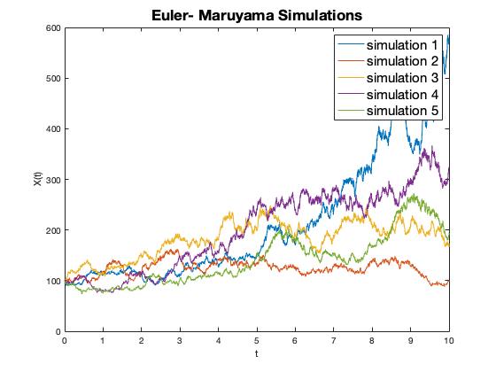
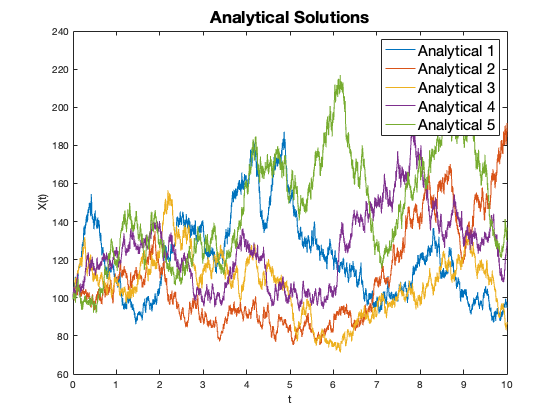
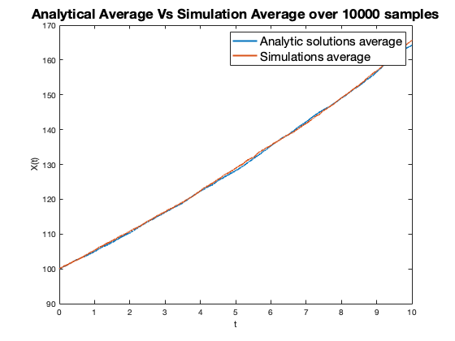

Contents
% MATH512 Project 3 clear all close all
4
SDE: dXt = a*X_t*dt + b*X_t*dW_t, a = 0.05, b =0.2, X0 = 100 a) We want to present a simulation method using Euler-Maruyama discretization.
a = 0.05; b = 0.2; X0 = 100; % initial value T_int = 0; % start time T_end = 10; % end time N = 10000; % number of grid points m = 10000; % number of simulations Yt = zeros(m,N+1); Yt(:,1) = Yt(:,1) + X0; dt = (T_end-T_int)/N; for j = 1:m for i = 2:N+1 Yt(j,i) = Yt(j,i-1) + a*Yt(j,i-1)*dt + b*Yt(j,i-1)*dW(dt); % 'dW(t)' is a function that returns a N(0,t) random number end end figure % show 5 of the simulations for i = 1:5 plot(T_int:dt:T_end,Yt(i,:)); hold on end title('Euler- Maruyama Simulations',FontSize=17) xlabel('t') ylabel('X(t)') legend('simulation 1','simulation 2','simulation 3','simulation 4',... 'simulation 5',FontSize=15) % b) analytical solution: Xt = 100*exp((a-b^2/2)t+b(W(t)-W(0))) Xt = zeros(m,N+1); Xt(:,1) = Xt(:,1) + X0; for j = 1:m for i = 2:N+1 Xt(j,i) = Xt(j,i-1)*exp((a-b^2/2)*dt+b*dW(dt)); end end % show 5 of the simulations figure for i = 1:5 plot(T_int:dt:T_end,Xt(i,:)); hold on end title('Analytical Solutions',FontSize=17) xlabel('t') ylabel('X(t)') legend('Analytical 1','Analytical 2','Analytical 3',... 'Analytical 4','Analytical 5',FontSize=15) % compare: take average X_avg_t = mean(Xt); Y_avg_t = mean(Yt); figure plot(T_int:dt:T_end,X_avg_t,LineWidth=2) hold on plot(T_int:dt:T_end,Y_avg_t,LineWidth=2) title('Analytical Average Vs Simulation Average over 10000 samples',FontSize=17) xlabel('t') ylabel('X(t)') legend('Analytic solutions average','Simulations average',FontSize = 15) function dW = dW(t) dW = randn*sqrt(t); end  